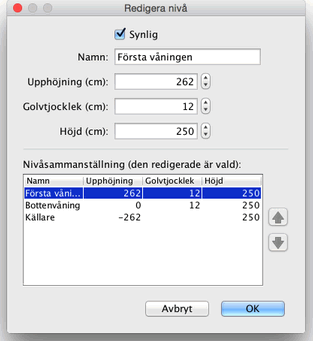

Du kan redigera namnet, upphöjningen och höjden på varje nivå genom att dubbelklicka på dess flik eller genom att välja Planlösning > Redigera nivå... från menyn. Modifieringspanelen för en nivå låter dig redigera dess atribut, men visar också en tabell som beskriver alla nivåer för ett hem, och där den valda linjen visar aktuell nivå.

Tjockleken för ett golv används för att räkna ut den vertikala kanten runt ett golv i 3D-vyn. Denna yta är synlig runt hål i golvet och på kanter på en mezzanin eller balkong.
Upphöjningen av en nivå kan vara positiv eller negativ. I det senare fallet kommer marken automatiskt att grävas in i 3D-vyn varje gång en möbel, ett rum eller en stängd uppsättning med väggar läggs till underjordsnivån. Denna funktion kan användas för att placera en pool i marken eller en källarvåning med en eller flera nivåer. |